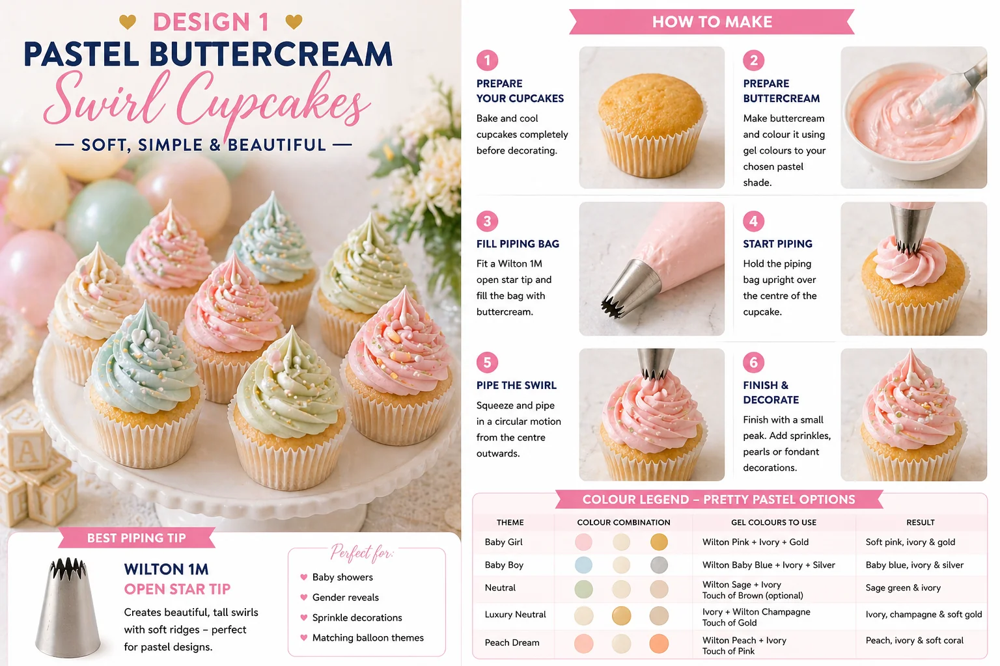
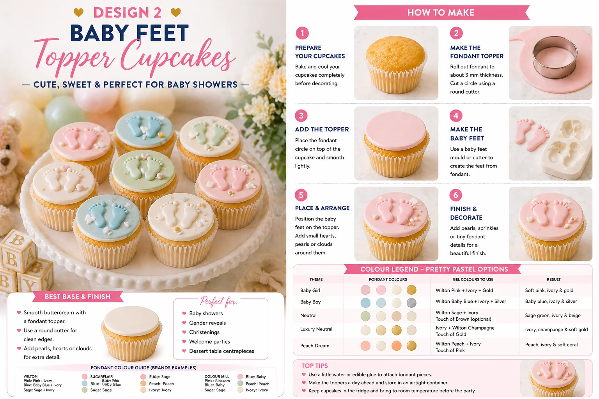

Baby shower cupcakes are one of the most effective ways to add colour, softness and personality to a celebration table. Whether you are baking for a baby shower at home, styling a dessert table, or coordinating cupcakes with a balloon display, a few simple decorating techniques make a significant difference to how the whole table looks.
This guide covers two designs that work well together and are realistic for home bakers. With a piping bag, a simple piping tip, pastel buttercream and a baby feet mould, you can create cupcakes that look delicate, coordinated and party-ready.
- Pastel buttercream swirl cupcakes
- Baby feet fondant topper cupcakes
At Little Moment Studio, our focus is balloon styling and celebration setups, but we know the most beautiful baby showers feel coordinated from top to bottom. Balloons, backdrops, cake stands, cupcakes and table details all work together to create the final look.
We do not make cupcakes ourselves, but these ideas are designed to inspire your dessert table. If you would like cupcakes or a cake to match your balloon display, we are happy to recommend a trusted local cake maker to help complete the setup.
Why These Two Designs
Baby shower cupcakes should feel soft, coordinated and suited to the occasion. These two designs give you a balanced display — the pastel swirls add height and colour, while the baby feet toppers add a clear, recognisable baby shower detail.
| Design | Style | Difficulty | Best For |
|---|---|---|---|
| Pastel buttercream swirl | Tall, soft and elegant | Easy | Colour impact and height |
| Baby feet fondant topper | Flat, neat and themed | Easy | Baby shower detail |
Both designs are also easy to adapt. You can use pink, blue, sage, ivory, champagne, peach or neutral tones depending on the theme of the event.
Pastel Buttercream Swirl Cupcakes

Pastel buttercream swirl cupcakes are one of the most versatile baby shower designs. They look soft and elegant, and can be matched to almost any balloon colour palette or table styling. The swirl itself is achievable with a single piping tip and a little practice.
What You Will Need
| Item | Purpose |
|---|---|
| Vanilla cupcakes | A soft, neutral base that works with any pastel colour |
| Pastel buttercream | Main decoration |
| Piping bag | Holds the buttercream |
| Wilton 1M piping tip | Creates the tall open-star swirl |
| Pearl sprinkles | Adds a delicate baby shower finish |
| Gold or white sprinkles | Optional luxury detail |
| Small fondant hearts or clouds | Optional decoration |
Best Piping Tip for Pastel Swirl Cupcakes
Use a Wilton 1M open star tip. It is one of the most widely recommended beginner piping tips for cupcake swirls, creating a tall, defined shape with soft ridges and a bakery-style finish without requiring advanced technique. A similar large open-star nozzle will also work.
How to Make Pastel Buttercream Swirl Cupcakes
- Bake and cool the cupcakes. Let them cool completely before decorating. Warm cupcakes will soften the buttercream and cause the swirl to lose shape.
- Prepare the buttercream. Make a firm vanilla buttercream. Divide it into separate bowls if you are using more than one colour. Use gel food colouring rather than liquid — gel colours are more concentrated and will not thin the buttercream.
- Fill the piping bag. Fit the Wilton 1M tip and fill the bag with your chosen pastel buttercream. For a single-colour cupcake, fill with one colour. For a mixed pastel effect, place two or three colours side by side in the bag or use the cling film method.
- Pipe the swirl. Hold the piping bag upright over the cupcake. Start at the outside edge and pipe around the cupcake in a circle, working inwards and upwards until you reach the centre. Finish with a small peak on top.
- Decorate. Add pearl sprinkles, gold or white sprinkles, or small fondant hearts. Keep the decoration light — a few well-placed pearls often look more refined than a heavy scattering of sprinkles.
Pastel Colour Ideas
| Theme | Colours |
|---|---|
| Baby girl | Soft pink, ivory and gold |
| Baby boy | Baby blue, ivory and silver |
| Neutral | Sage green, ivory and beige |
| Luxury neutral | Ivory, champagne and soft gold |
| Peach dream | Peach, ivory and soft coral |
Colour Tip
We think the strongest combination for a premium baby shower table is ivory, sage, champagne and soft pink — it feels coordinated and works beautifully alongside balloon displays without competing with them.
Baby Feet Fondant Topper Cupcakes

Baby feet topper cupcakes are a natural fit for baby showers — the design is instantly recognisable and looks neat and considered on a styled table. This design uses a smooth fondant circle on top of the cupcake, decorated with tiny baby feet, pearls and small fondant details.
What You Will Need
| Item | Purpose |
|---|---|
| Vanilla cupcakes | Cupcake base |
| Smooth buttercream or jam | Helps the fondant topper stick |
| Fondant or sugarpaste | Main topper and baby feet |
| Round cutter | Cuts the fondant circle |
| Baby feet fondant mould | Creates the baby feet detail |
| Small rolling pin | Rolls the fondant evenly |
| Edible glue or water | Attaches fondant details |
| Pearl sprinkles | Adds a delicate finish |
| Small fondant hearts or clouds | Optional extra detail |
Choosing a Baby Feet Mould
A mould is far easier than trying to shape baby feet by hand. It gives you a neat, repeatable result and makes the cupcakes look more considered.
We would suggest the PME Baby Feet Pop It Mould as a first choice — it is a well-established cake decorating brand and the mould is designed to work at cupcake scale. Available from The Cake Decorating Company, Cake Stuff and most UK cake suppliers.
Other options include food-grade silicone baby feet moulds from Milky Panda and similar UK suppliers. Amazon UK and Etsy UK also carry low-cost alternatives, but check the dimensions carefully — some moulds are sized for larger celebration cakes rather than cupcakes.
| Supplier | Product | Notes |
|---|---|---|
| The Cake Decorating Company | PME Baby Feet Pop It Mould Set of 2 | Good branded option for cupcakes |
| Cake Stuff | PME Baby Feet Pop It Mould Set of 2 | UK cake supplier |
| Milky Panda | Baby Feet Fondant Mould | Food-grade silicone option |
| Amazon UK | Baby feet silicone mould fondant | Many low-cost choices — check size |
| Etsy UK | Baby shower fondant mould | Handmade and custom options |
How to Make Baby Feet Fondant Topper Cupcakes
- Cool the cupcakes completely. The tops should be cool and firm so the fondant sits flat and does not soften.
- Add a thin base layer. Spread a very thin layer of buttercream, ganache or jam on top of each cupcake. This acts as glue for the fondant circle. Keep it thin — the fondant topper should sit flat, not slide around.
- Make the fondant circle. Roll out fondant to around 2–3mm thick. Use a round cutter slightly smaller than the top of the cupcake to cut the circle. Place it on top and smooth gently with your fingers.
- Make the baby feet. Press a small amount of fondant into the baby feet mould. Remove the excess from the back so the shape is flat. Gently release the feet from the mould. If the fondant is too soft, leave them to firm for a few minutes before placing.
- Attach the baby feet. Use a tiny amount of edible glue or water to fix the feet to the fondant circle. Position them in the centre or slightly above centre.
- Add finishing details. Pearl sprinkles, tiny fondant hearts or small gold sprinkles around the edge. Keep it uncluttered — the baby feet should remain the focal point.
Fondant Tip
If the fondant sticks to the mould, dust it very lightly with cornflour or icing sugar before pressing. Use only a small amount — too much will affect the surface finish of the baby feet.
Colour Ideas for Baby Feet Toppers
| Theme | Fondant Colours | Finish |
|---|---|---|
| Baby girl | Pink, ivory and gold | Soft and pretty |
| Baby boy | Blue, ivory and silver | Classic and clean |
| Neutral | Sage, ivory and beige | Modern and elegant |
| Luxury neutral | Ivory, champagne and soft gold | Premium and timeless |
| Peach dream | Peach, ivory and coral | Warm and soft |
Displaying Baby Shower Cupcakes
A baby shower dessert table looks most considered when the colours are coordinated across the cupcakes, balloons and table decor. Limit the palette to three or four shades and repeat them throughout.
- White cake stands to add height variation
- Pearl sprinkles and soft gold accents throughout
- A coordinating balloon garland behind or above the table
- Dried flowers, baby props or small wooden blocks as filler
- Ivory table linen as a base
Ivory, sage green, blush pink and champagne gold work well together as a base palette — soft, stylish and suitable for most baby shower themes.
Suggested Cupcake Box
Box of 12:
| Quantity | Design |
|---|---|
| 6 | Pastel buttercream swirl cupcakes |
| 6 | Baby feet fondant topper cupcakes |
Box of 6:
| Quantity | Design |
|---|---|
| 3 | Pastel buttercream swirl cupcakes |
| 3 | Baby feet fondant topper cupcakes |
Beginner Tips for Better Results
- Use firm buttercream. If the swirl loses shape, chill it briefly or add a little more icing sugar before piping.
- Do not overfill the piping bag. A half-full bag is far easier to control.
- Practise one swirl first. Pipe onto baking paper, scrape it off and reuse the buttercream before decorating the actual cupcakes.
- Dust the mould lightly. A very small amount of cornflour or icing sugar prevents sticking without affecting the finish.
- Let fondant feet firm up. Give them a few minutes out of the mould before placing them onto the cupcake, especially in a warm kitchen.
- Keep decorations minimal. A few pearls or a small heart look more refined than covering the cupcake. The baby feet should be the focal point of Design 2.
- Coordinate the cupcake cases. Pale pink, sage green or ivory cases make a noticeable difference to how polished the finished box looks.
Your Questions Answered
Can you make these cupcakes the day before?
Yes. Store them in a covered cupcake box or airtight container in a cool, dry place. Fondant decorations are best kept away from humidity as fondant can become sticky. The baby feet toppers can be made ahead and left to firm up — which is actually recommended for the best result.
How do you transport baby shower cupcakes?
Use a cupcake box with inserts so nothing moves around. Baby feet topper cupcakes are easier to transport because they are flat. Pastel swirl cupcakes are taller — check the box has enough height clearance. Keep cupcakes out of direct sunlight and away from heat.
What if the fondant circle slides on the cupcake?
You have too much buttercream or jam underneath. Use just enough to coat the surface lightly — the fondant should sit flat and stable, not float on a thick layer. If it continues to move, let the base layer firm for a few minutes before placing the fondant circle.
What if the buttercream swirl loses shape?
The buttercream is too soft. Chill it in the bowl for 5–10 minutes, then beat briefly before refilling the piping bag. In a warm kitchen this can happen quickly — work in small batches and chill between sessions if needed.
Useful Tools
- Wilton 1M open star piping tip
- Disposable piping bags
- Round fondant cutter
- Baby feet fondant mould (PME Baby Feet Pop It Mould recommended)
- Small rolling pin
- Edible glue
- Pearl sprinkles
- Pink, blue, sage or ivory fondant
- Pastel gel food colours
- Cupcake boxes with inserts
The two designs work well as a pair because they contrast each other in shape — the tall swirls create height and colour across the table, while the flat fondant toppers bring the baby shower theme into focus. Together they make a dessert table that feels coordinated without requiring a full day of preparation.
For more baby shower styling inspiration, see our guide to baby shower balloon ideas.
For more dessert table inspiration, including fondant toppers and themed cupcake styles, see our guide to fondant cupcake ideas for baby showers and birthdays.
For themed seasonal designs, see our guides to Halloween cupcake ideas and 4th of July cupcake ideas.
Want Cupcakes and Balloons Styled Together?
If you love the idea of a fully coordinated baby shower dessert table with matching cupcakes, balloons, backdrop and props, view The Luxe Baby Shower — our signature setup that brings the whole look together for you, available in Mini, Signature and Grand Luxe tiers.
View The Luxe Baby Shower →Planning a Baby Shower in Sittingbourne or Kent?
Little Moment Studio can help you create a coordinated balloon display, backdrop and colour palette for your celebration. We can also recommend a trusted local cake maker if you would like cupcakes or a cake to complement your dessert table.